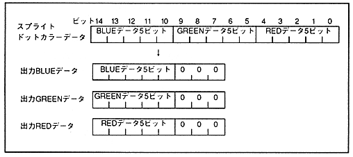

The dot color data in RGB format is 15 bits for sprites and 15 or 24 bits depending on the number of character colors for scrolling. When the dot color data is 15 bits, the lower 3 bits of each RGB are fixed to 0 and used.
■ Sprite dot color data
RGB sprite dot color data is 5 bits for each RGB, and the lower 3 bits of each are fixed to 0 for output. Fig. 10.5 shows RGB sprite dot color data.
Figure 10.5 RGB sprite dot color data

■ Scroll dot color data
Scroll dot color data in RGB format varies depending on the number of character colors. In the case of 15 bits, the lower 3 bits of each RGB are fixed to 0 and output.
The back screen is output with the lower 3 bits of each RGB fixed to 0, as in the case of 32768 characters on the scroll screen.